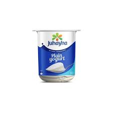

Yogurt with Biscuits
Ingredients:
- 1 cup of Yogurt
- 1 12-piece Luxe biscuit pack
- 1 tablespoon of honey
Instructions:
- Open the Yogurt cup and the Biscuit pack.
- Stir the yogurt and crush the biscuits.
- Put the crushed biscuits into the yogurt and stir.
- Add 1 tablespoon of honey then stir.

Fruit Salad
Ingredients:
- 1 medium apple
- 1 medium banana
- 1 medium orange
- 1 medium grapevine
- 1 medium pomegranate
- any fruit juice if available
Instructions:
- Peel and cut the fruits into cubes.
- place these cubes in a big bowl.
- pour any fruit juice if available.
Fried Indomie Noodles
Ingredients:
- 2 Fried Indome Noodles
- 10 grams of chilli powder
- 10 grams of minced garlic
- 10ml of oil
Instructions:
- boil 250ml of water
- Add the noodles to the pot of water for 5 minutes.
- grab a bowl and add the spices packs of the noodles (taste powder & sweet Soya sauce).
- Add the chili powder and the minced garlic to the bowl.
- Put the oil on medium heat for 3 minutes to become hot.
- Pour the hot oil on the mixture of spices and garlic.
- Remove the noodles from the water and add them to the bowl, then stir well and serve
Fankoush
Ingredients:
- 100 grams of Fankoush
- pench of salt
Instructions:
- Fry the Fankoush into a deep frying pan on medium to high heat.
- Wait for 1 minute untill the size of it gets bigger.
- get the Fankoushout of the oil into a plate with paper towl on it.
- sprinkle a pench of salt on it